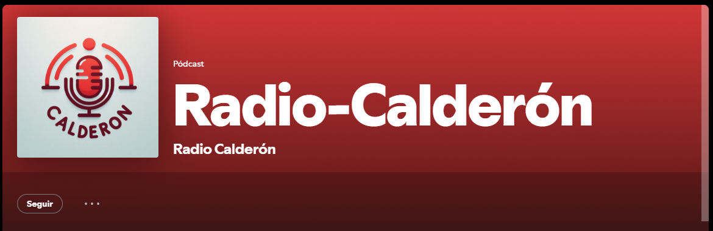

Creacion de Radio Calderon y sus integrantes
Somos un grupo de cuatro estudiantes que hemos decidido emprender un proyecto innovador y emocionante: ¡crear una radio estudiantil! Nuestra idea es construir un espacio de comunicación donde todos los miembros de nuestra comunidad educativa puedan sentirse conectados, informados y valorados. Imaginamos una radio que sea mucho más que un simple canal de noticias. Queremos que sea un lugar donde los estudiantes puedan expresar sus opiniones, compartir sus talentos y descubrir nuevas pasiones. Desde entrevistas a profesores y alumnos destacados, hasta programas de música, debates sobre temas actuales y concursos interactivos, las posibilidades son infinitas. Nuestra radio será una herramienta fundamental para fomentar la participación y el sentido de pertenencia a nuestro centro. Queremos que todos se sientan parte de este proyecto y que puedan aportar sus ideas y sugerencias. Además, creemos que esta iniciativa nos permitirá desarrollar habilidades clave como la comunicación, el trabajo en equipo y la creatividad.
RADIO EN DIRECTO
- Radio-Calderon Es posible una nuevo metodo de comunicacion para nuestro instituto
- spotify ¿Quién no utiliza difernetes medios de escucha?, siendo uno de estos el cual utilizaremos nosotros 